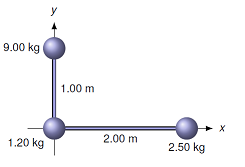
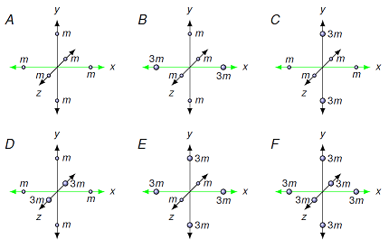
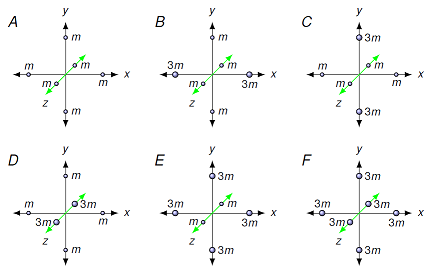
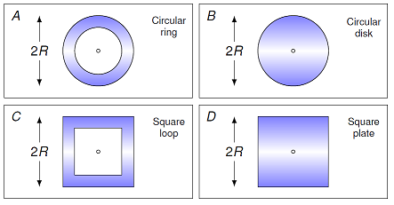
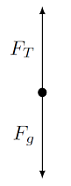
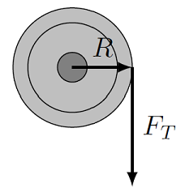
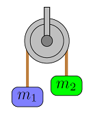
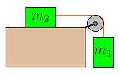

Rotational dynamics¶
Overview¶
In this lesson, we are continuing the same conceptual method we have been using previously – making a rotational analogue of linear motion by matching our linear quantities with the associated rotational one. Here is what we have gotten so far:
Linear quantity |
Rotational quantity |
|---|---|
position \({\vec r}\) |
angle \(\theta\) |
velocity \({\vec v}\) |
velocity \({\vec \omega}\) |
acceleration \({\vec a}\) |
acceleration \({\vec \alpha}\) |
momentum \({\vec p}\) |
momentum \({\vec L}\) |
force \({\vec F}\) |
torque \({\vec \tau}\) |
We are now at the stage where we want a rotational version of Newton’s second law of motion. In other words, we want to see how to make an angular version of
We have two of the three pieces necessary already. First, the angular acceleration \({\vec \alpha}\) is simply the angular analogue of the linear acceleration \({\vec a}\). Also, in Lesson 19 (vector product), the torque was introduced as the rotational version of a force. This was seen in Lesson 20 to be the change in the angular momentum with time,
just as force is the change in linear momentum with time. So the remaining piece is how to make mass “rotational”.
Remember that, from Newton’s first law of linear motion, you can think of the mass of an object as its resistance to linear acceleration – the larger the mass, the more force it takes to get the same acceleration. Thus, we need to find what measures an object’s resistance to rotation. This will be known as the “moment of inertia” \(I\) of an object. A crucial point will be that the shape of the object matters just as much as its mass. After we define this quantity, we can then write down the rotational version of Newton’s second law, and apply it to various situations.
A situation where this idea is very important is tight-rope walking. Tight-rope walking (or “funambulism”) crucially involves maximizing the resistance to rotational motion, so that the walker does not rotate to the side and falls off the wire. This is the reason for the long pole that they carry, which keeps the center of mass of the person directly underneath them and the wire, so they remain stable. This is outlined in the video in the next cell.
from IPython.display import YouTubeVideo
YouTubeVideo('9SaShn8OkJI', width = 600, height = 400, mute = 1)
Here are the objectives for this lesson:
Define moment of inertia for an object rotating around a given axis.
Qualitatively rank the moments of inertia for a group of objects with a given rotation axis.
State Newton’s second law for rotational motion.
Calculate the angular acceleration or final angular velocity of an object after it experiences a torque over a given time interval.
Moment of inertia¶
Much like mass gives a measure of inertia, or resistance to linear motion, moment of inertia gives a measure of resistance to rotational motion – the larger the moment of inertia \(I\), the more difficult it is to get an object to start rotating. As mentioned above, we will see that where the mass is will matter just as much as what the mass is. In fact, in situations where the mass cancels out (as we say with inclined planes in Lessons 14 and 16, for example), the only important factor will be the distribution of the mass. Thus, a hoop, a ball, and a disk may all have the same mass, but their mass is arranged differently, so they will have different moments of inertia.
To show this, let’s start with the simplest case, a small mass. A point mass is a mass whose size is small compared to its distance away from the origin – thus, the Earth counts as a point mass in its orbit around the Sun! For a point mass, we define the moment of inertia, or rotational inertia, as
For general objects, made of a collection of small masses \(m_i\), we have the moment of inertia is simply the sum of the moments of inertia for the individual masses, all using the same rotational axis:
where \(\sum_i\) means we add up all the individual \(i\)’s.
Why this definition? Remember that we have said net torque as the rate of change in angular momentum. For a point mass, this definition should match Newton’s second law of linear motion – net force is the rate of change in linear momentum. We can match these two equations together if the moment of inertia is used as the rotational version of mass.
Problem: The L-shaped object in the figure below consists of three masses connected by light rods. Calculate the moment of inertia for this object, if it is rotated (a) around the \(x\) axis, and (b) around the \(y\) axis. Answers: 9.00 kg m\(^2\); 10.0 kg m\(^2\)

Problem: Shown below are six point-mass systems connected by stiff lightweight connectors to form rigid objects. All point-masses in the systems are the same distance from the origin and have masses of either \(m\) or \(3m\). The three axes are mutually perpendicular.
Rank these systems based on their moments of inertia about the \(x\) axis.

Rank these systems based on their moments of inertia about the \(z\) axis.

For an extended object – one whose size is not small, compared to its distance from the origin – we think of its moment of inertia as the sum of little bits of mass making up the object. It might help to think of the object’s moment of inertia in terms of its atoms and their moments of inertia.
Problem: Four flat objects have the same mass \(M\) and the same outer dimensions (circles have diameter \(2R\), squares have sides \(2R\)). The small circle in each figure represents the axis of rotation, which passes through the center of mass, perpendicular to the plane of the object. Rank these systems based on their moments of inertia about their rotation axis.

A list of more moments of inertia than you will ever need is available at Wikipedia. However, much like the last problem, you should be able to rank the moments of inertia for various objects just based on their shape! The larger portion of the object’s mass that is further away from its rotation axis, the larger its \(I\) is.
This discussion of the moment of inertia for an object is rather simplified. We have assumed a constant rotation axis, and a mass whose shape is not changing. There are many ways these things can get more complicated; if you go into engineering, these may be a crucial part of your studies! As a quick example of how moment of inertia can change, the following video shows an example of the “tennis racket theorem”. This explains how the moment of inertia can vary, depending on which axis you rotate the object around. You can try this yourself using a cell phone (don’t drop it!) or a book. The video was made onboard the International Space Station (ISS).
from IPython.display import YouTubeVideo
YouTubeVideo('fPI-rSwAQNg', width = 600, height = 400, mute = 1)
Another example of this onboard the ISS is shown in the next cell. Here, you can easily see how the handle flipped directions!
from IPython.display import YouTubeVideo
YouTubeVideo('1n-HMSCDYtM', width = 600, height = 400, mute = 1)
Newton’s second law for rotation¶
Now that we have defined the moment of inertia, we can move on to the rotational version of Newton’s second law of motion. Going back to the linear version,
we can say that a given net force will result in the acceleration of the object. If the mass of the object is larger – its resistance to linear motion is bigger – then the same net force will give rise to a smaller linear acceleration \({\vec a}\).
We now have the same thing for rotational motion. Using our map from linear to rotational quantities, then \({\vec F} \to {\vec \tau}\), \({\vec a} \to {\vec \alpha}\), and now, the mass \(m\) goes to the moment of inertia \(I\). This gives
Newton’s second law of rotational motion: Suppose we have a fixed rotation axis for an object, with a moment of inertia \(I\) around that axis. Then a net torque \({\vec \tau}\) around that axis will produce an angular acceleration \({\vec \alpha}\), given by
\[ \sum {\vec \tau} = I {\vec \alpha}\]
As we have seen in many examples, Newton’s second law in terms of forces and linear acceleration is a powerful method to find the motion of an object. The same thing will be true when considering the torques and angular acceleration of objects.
Important: We will see that both versions are often used in conjunction when studying rotation. This is because the torques acting on the object are due to forces, so the effect of these forces on the object’s linear motion should often be considered as well.
To build off of the last comment, a common situation where both linear and rotational motion occurs is “rolling without slipping”. Generically, an object can have a linear acceleration (say a tire moving along the road) and have an angular acceleration at the same time (the tire is speeding up as you press the gas). However, these two motions do not have to be related! Suppose you are driving on an icy road, where there is no friction between the tire and the road. You can press the gas all you want, so \(\alpha > 0\), but the lack of friction means that the tire will continue with a constant velocity (so \(a = 0\)). The tire is slipping on the road, so the linear and angular motions are separate.
However, to continue this example, if there is friction between the tire and the road, then the tire can roll without slipping. This means that the two types of motion are related.
Rolling without slipping: When a rolling object with radius \(r\) moves along a surface without slipping, then the linear and rotational motions are related by the equations
\[ v_t = r \omega \qquad a_t = r \alpha \]
Remember that these equations only work if there is rotation without slipping!
Example: The half-Atwood machine¶
Let’s go through a few examples of how Newton’s second law works with rotation. For the first, suppose there is a 4.00 kg block hanging off of a string, which in turn is wrapped around a 1.20 kg pulley with a 32.0 cm diameter. The rope moves on the pulley without slipping, so the two rotate at the same angular speed. What is the magnitude of the block’s acceleration?
The pulley is a disk with a fixed axis, so it can rotate freely, but does not move anywhere. This means its linear acceleration is zero, but its angular acceleration will not be – the friction between the pulley and the string will cause it to accelerate rotationally. In addition, the block will accelerate linearly, but not rotationally. There are two kinds of motion here, and the string relates the linear motion of the block to the angular motion of the pulley disk. This will mean we need to map back and forth between these two types of motion.

With this in mind, we first draw the FBD for the block, and find a relation between the forces on it and the block’s linear acceleration magnitude \(a\). The FBD is shown below.

The corresponding equation for Newton’s second law of (linear) motion is
with \(m\) the mass of the block. Note that I have chosen downward to be negative. We will see the choice of directions will be important for the linear and rotational motions to be consistent. Thus, the acceleration is downward, so in terms of the magnitude \(a\), \(a_y = -a\). This gives the equation
Now let’s turn to the rotational motion of the pulley. This disk is acted on by a net torque due solely to the tension force from the string. None of the other forces acting on the pulley – the gravitational force, and the applied force from the support keeping it in place – will act to rotate the disk itself.

Thus, we have
where \(\tau_T\) is the magnitude of the torque from \(F_T\). To actually solve for the acceleration, we need to relate the rotational quantities \(\tau_T\) and \(\alpha\) to the linear quantities \(F_T\) and \(a\) for the block. Since \(\tau_T\) is a magnitude, it is given by
where \(R\) is the radius of the disk – the distance from the rotation axis at the center of the disk, to the point on the edge of the disk where the tension force \({\vec F}_T\) acts. The angle \(\theta\) is the angle between the position vector \({\vec R}\) and the force vector \({\vec F}_T\), with \(R\) the magnitude of \({\vec R}\). From the picture above, you can see that \(\theta\) is 90\(^\circ\), so \(\sin \theta = 1\). Also, the torque is negative, because as drawn, it points in the clockwise direction.
We can also relate the angular acceleration \(\alpha\) to the magnitude of the block’s acceleration \(a\) by using \(a = -R \alpha\) – this is where we use the fact that the rope moves without slipping on the pulley! The sign comes again from the fact that the acceleration of the pulley is clockwise; this minus sign will match that we put in the torque. Thus, our rotational version of Newton’s second law gives
The final step is to find the moment of inertia \(I\) for the pulley. We will write it algebraically in terms of its mass \(M\) and radius \(R\). This gives that \(I = (1/2) MR^2\). Plugging this back into the previous equation, we can solve for \(a\) to get
Rotation is different: It is worthwhile to note the effect that the shape of the disk has here. Since the pulley is a disk, a lot of its mass is towards the center of the disk, and thus near the rotation axis. This gives a moment of inertia of \((1/2) MR^2\). A ring, on the other hand, would have \(I = MR^2\). Where the mass located in the pulley will affect the acceleration of the block! Said differently, because some shapes of pulley are easier to start rotating than others, this will affect the motion of an object hanging off the pulley. In linear motion, we didn’t care about where the mass was, just what size it was; for rotation, the location of the mass can be just as important as its value!
We now have two equations that relate the tension force magnitude \(F_T\) in the string connecting the block to the pulley, and the size \(a\) of the block’s linear acceleration. To copy these down from earlier,
Let’s solve for \(F_T\) in one of the equations, and plug it into the other, so that we have only an equation for \(a\). From the torque equation,
so that
or
The addition of the pulley means that the acceleration \(a < g\); having to accelerate both the block and the pulley gives a smaller size of acceleration. If the pulley were massless, however, then \(a = g\). Also, the radius of the pulley doesn’t matter! The only effect is that the pulley is a disk, giving a factor of one-half when including the pulley mass. With different shapes, this numerical factor would be different. If we plug our original numbers in from above, we get specifically that \(a = 8.53\) m/s\(^2\).
Problem: Calculate the value of the tension force using both equations above, and verify that the answer is the same for both.
Practice problems¶
For the following two problems, here are two hints:
The tension force magnitudes on either side of the pulley are not the same! If they were the same, then the pulley wouldn’t accelerate along with the blocks, and the rope would slip along the pulley.
Make sure you are consistent with your directions! In particular, you need to ensure that the positive direction means the same thing in all of your Newton’s second law equations.
Problem: An Atwood machine has two masses hanging off of a pulley, one on either side, as shown in the picture below. Here, \(m_1 = 3.00\) kg, \(m_2 = 7.00\) kg, the mass \(M\) and radius \(R\) of the disk-shaped pulley are 1.25 kg and 5.00 cm, respectively. The rope moves on the pulley without slipping. What is the magnitude of the linear acceleration of the two masses? Answer: 3.69 m/s\(^2\)

Problem: A mass \(m_1 = 4.00\) kg is hanging over the edge of a table, suspended by a pulley (uniform disk) of mass 2.00 kg. Attached to the other side of the string is a block of mass \(m_2 = 3.00\) kg moving along table. If the coefficient of kinetic friction between the table and the block is 0.250, then:
What is the magnitude of the acceleration of the two blocks? Answer: 3.99 m/s\(^2\)
What is the tension value in the string attached to \(m_1\)? Answer: 23.3 N
What is the tension value in the string attached to \(m_2\)? Answer: 19.3 N

Summary¶
We have now combined together all of the rotational versions of physical quantities we had seen in their linear incarnations. In particular, we can relate the rotation of an object – in terms of its angular displacement, velocity, and acceleration – to the net torque acting on it. The relation between net torque and angular acceleration is made exact by defining the moment of inertia, the resistance of an object to rotational motion. The object’s net torque will then change its angular momentum. These descriptions exactly mirror the corresponding relations between linear quantities.
As seen in the situations given above, it is easy to construct scenarios where both angular and linear motion happen at the same time. Historically, understand a way to couple these two types of motion was important in the development of more efficient machinery, such as conversion of the rotation of an axel attached to a water wheel into the linear motion of a tool, such as a hammer, in a factory.
After this lesson, you should be able to:
Rank a group of objects by their moment of inertia around the center of the objects.
Use both versions of Newton’s second law to find the acceleration of an object, where both linear and rotational motion is involved.